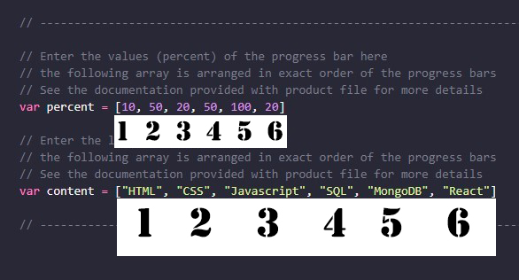
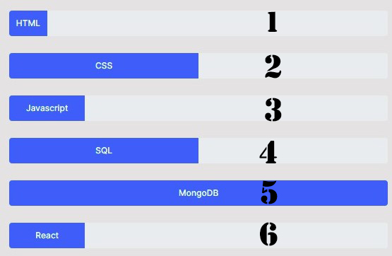

THANKYOU for purchasing our product
Here is the documentation and requirements for the templates that you have puchased
- The product you purchased is a simple single page Buisness Portfolio made with bootstrap
- The product contains 3 color themed pages
- This project is made up with the major web designing libraries like Boostrap and jQuery
- The html files are documented and the file contains scripts which are easily readable and is also fairly documented
- You can easily edit and code for your nedds
- The files dosnt contain any images as shown in the preview. You can add your own images to the file
- The pages are well designed an tested on all major screen sizes
- Prefer using square image as the main image not stop making an irregular shape
- You can easily add more sections in product section ,review,service section just by copy pasting the code . Contact for any queries
Here are the Dependencies that you need to integrate to your project
(try pasting the in order as some style classes or overwritten in the project. !! Remember to put the css sheet after these !!)
-
<"https://cdn.jsdelivr.net/npm/bootstrap@5.0.2/dist/css/bootstrap.min.css" rel="stylesheet" integrity="sha384-EVSTQN3/azprG1Anm3QDgpJLIm9Nao0Yz1ztcQTwFspd3yD65VohhpuuCOmLASjC" crossorigin="anonymous"> <script src="https://ajax.googleapis.com/ajax/libs/jquery/3.6.0/jquery.min.js"> </script><script src="https://cdn.jsdelivr.net/npm/bootstrap@5.0.2/dist/js/bootstrap.min.js"> </script>

Adding your own text to the animate progress bar
- The progress bar in the portfolio page is made with bootstrap
- You need to edit the contents of the progress bar in the attached js file
- it is very easy than you think
- You just need to replace the contents of the highlighted js lines
- The arrays in js file are orderd exactly like the progress bar
- Refer to images below for more clarification
- The progress bar is made with boostrap and jquery

